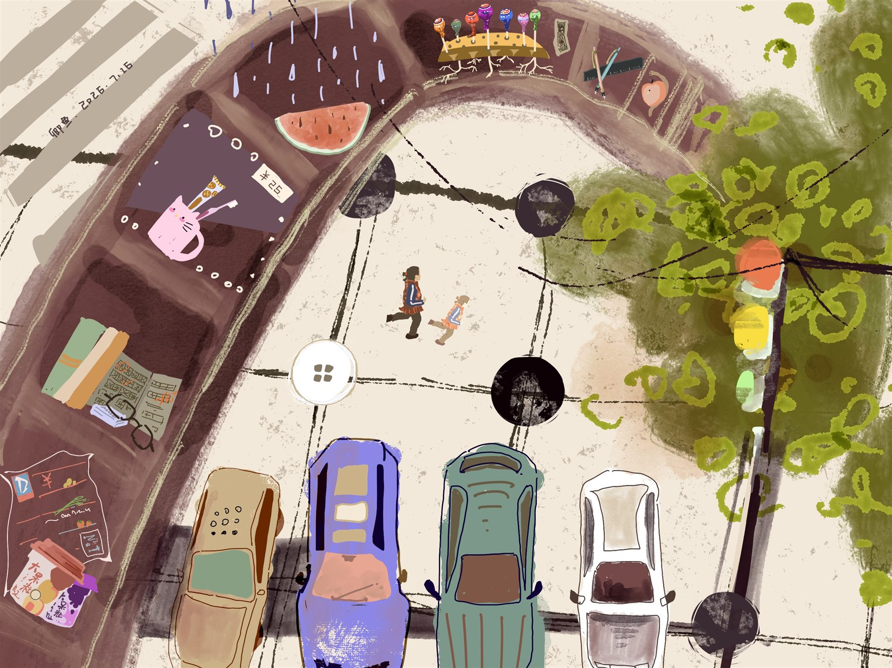
城市生活记忆
以街景、交通、树木和生活物件组成叙事画面，为旧布拼贴的色彩和内容提供视觉线索。


Current Submissions
本次同步收录 6 位学生、15 张方案与过程图片。以下内容均为阶段提交，后续将随制作进度继续更新。

以街景、交通、树木和生活物件组成叙事画面，为旧布拼贴的色彩和内容提供视觉线索。
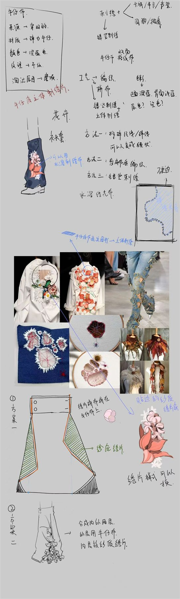
从牛仔裤结构出发，结合拼接、线迹和花卉刺绣，探索可穿戴的服饰与配件方案。
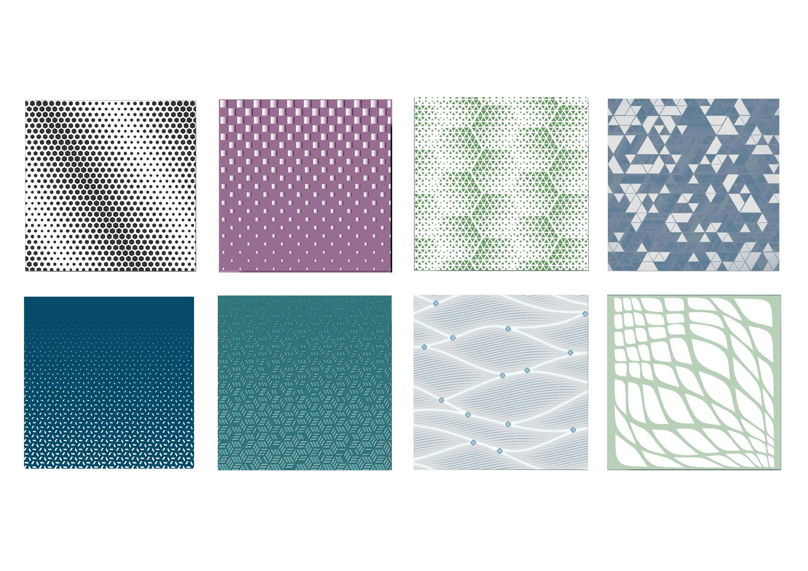
围绕点、网格与连续结构展开的六组图案研究，记录纹样密度、色彩和形态的变化。
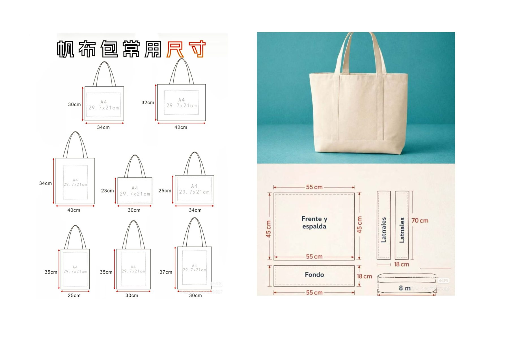
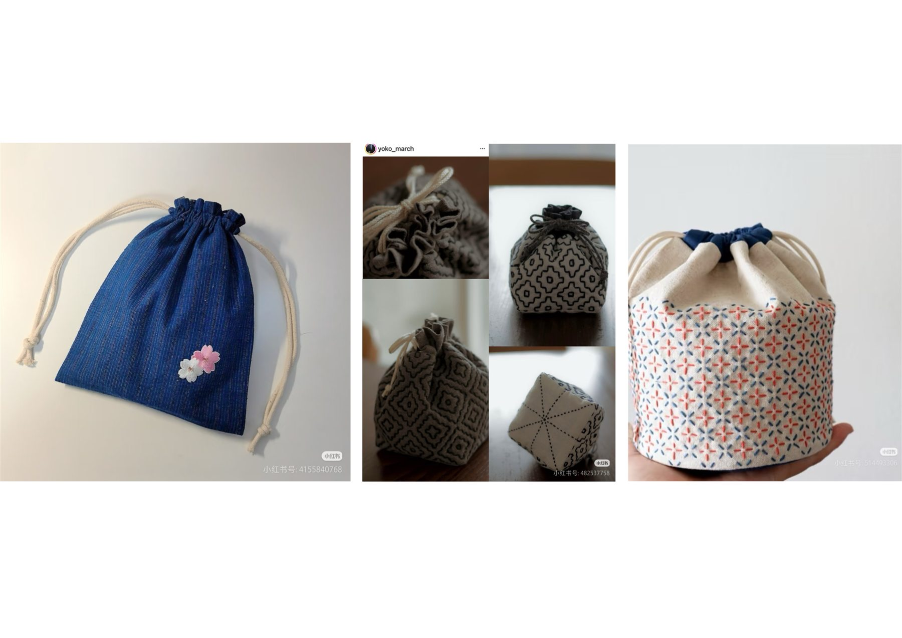
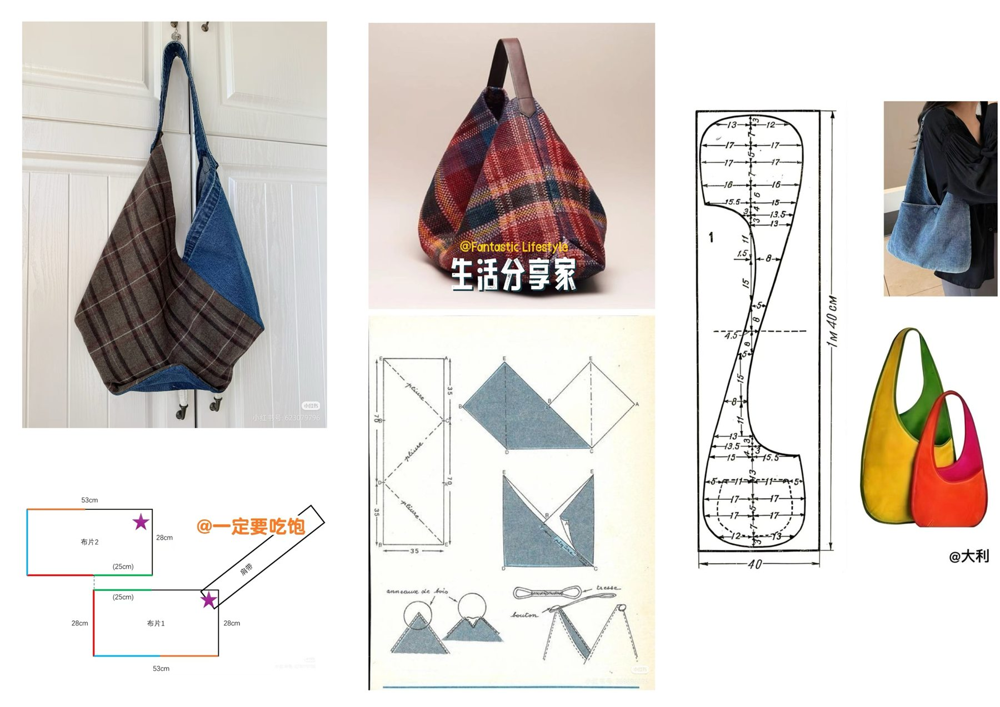
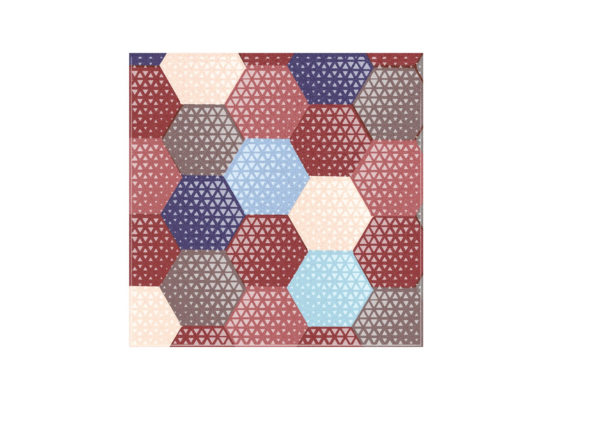
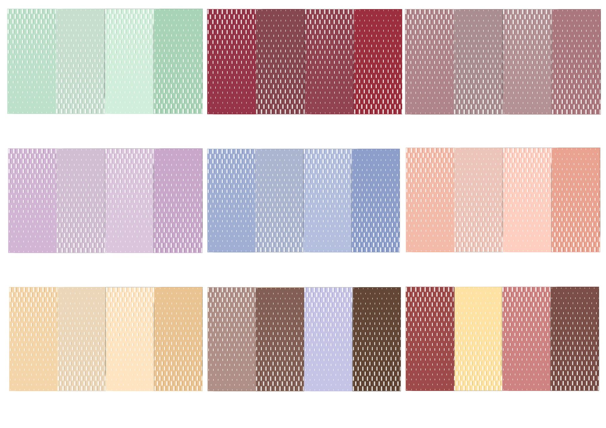
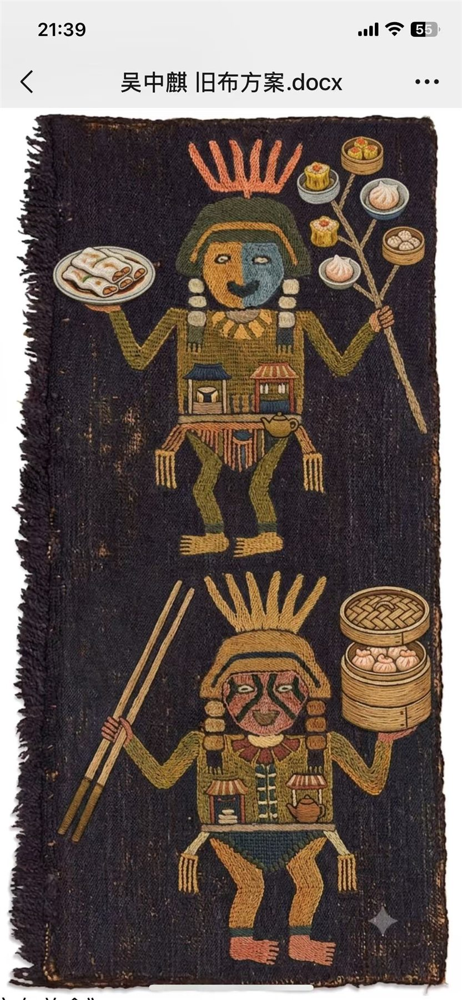
以捡来的旧布、麻布和戳戳绣为媒介，将安第斯图腾与广绣图案放入同一块织物中展开对话。
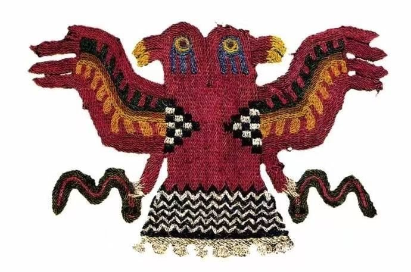
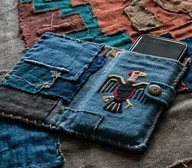
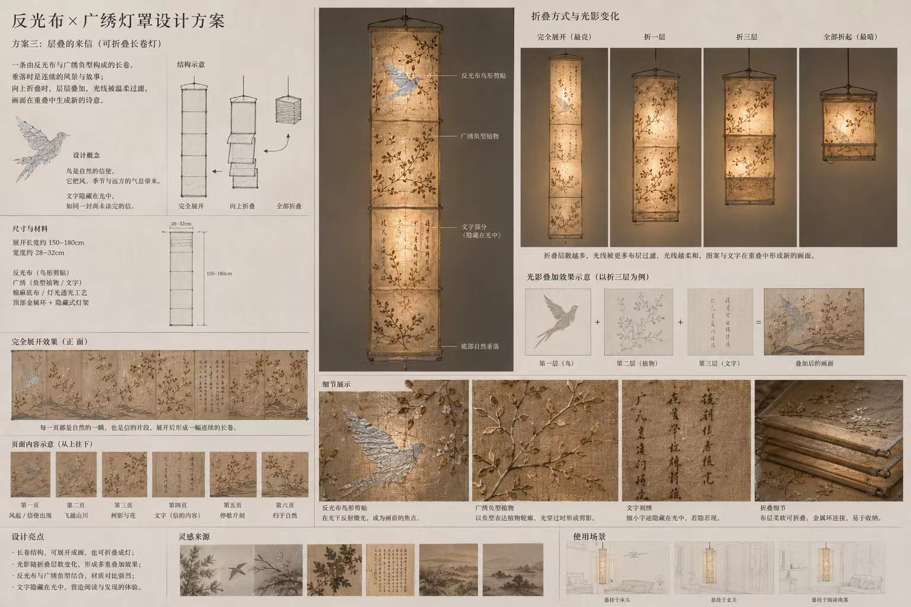
将反光布与广绣组合为可折叠长卷灯罩，让鸟、枝叶和文字在折叠层次与光线中形成新的画面。
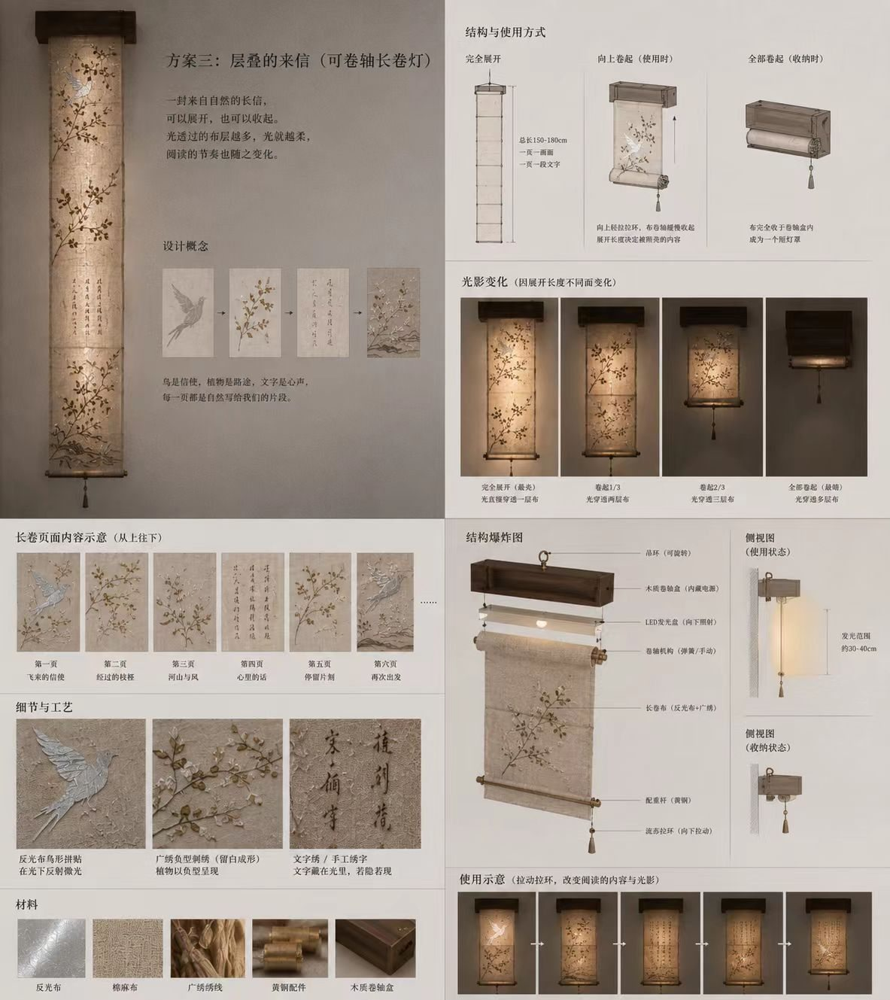
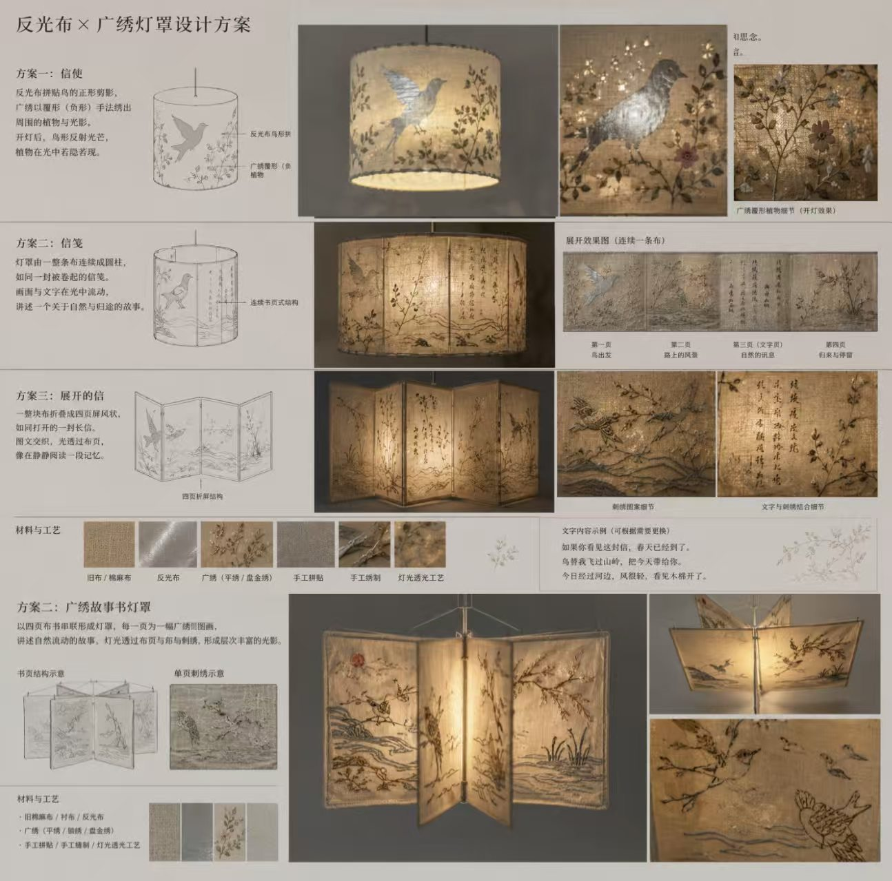
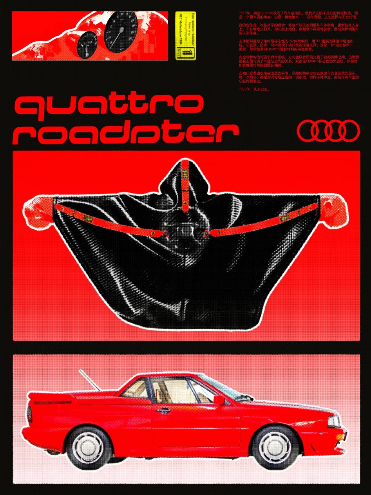
把敞篷跑车的结构反转为穿戴形态，以覆膜尼龙、安全带和红黑色彩语言塑造轻量的“液态装甲”。
Submit Your Work
填写作品信息并选择图片，记录旧衣来源、拼布方案、刺绣过程和完成作品。